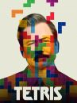
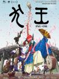

| durée des films |
apres-midi 13h-19h soir 19h-01h |
lundi | mardi | mercredi | jeudi | vendredi | samedi | dimanche | |
|---|---|---|---|---|---|---|---|---|---|
| avatar | apres-midi | 18h30 | |||||||
| soir | 21h30 | ||||||||
| suzume |  |
apres-midi | 18h00 | 15h30 | |||||
| soir | 21h00 | ||||||||
| glass onion |  |
apres-midi | 18h00 | ||||||
| soir | 20h30 | ||||||||
| les gardient de la galaxy 3 |  |
apres-midi | 15h30 | ||||||
| soir | 20h30 | ||||||||
| les huit montagne |  |
apres-midi | 14h00 | 16h00 | |||||
| soir | 19h00 | ||||||||
| annie colere |  |
apres-midi | 16h30 | 18h30 | |||||
| soir | 19h00 | ||||||||
| fumer fait tousser |  |
apres-midi | 13h30 | ||||||
| soir | 19h00 | ||||||||
| tetris |  | apres-midi | 16h30 | 14h00 | |||||
| soir | 21h00 | ||||||||
| super mario bros |  |
apres-midi | 16h00 | 16h30 | |||||
| soir | |||||||||
| inu-oh |  | apres-midi | 13h30 | ||||||
| soir | 21h30 | 21h30 |
avatar 2 : la voix de l'eau
- film de : james cameron
- produit par : james cameron, rick jaffa
- date de sortie : 14 decembre 2022
- casting : Sam Worthington, Zoe Saldana, Sigourney Weaver
synopsis
Suzume
- film de : makoto Shinkai
- date de sortie : 12 avril 2023
- casting : Lévanah Solomon, Nanoka Hara, Benjamin Jungers
synopsis
Glass Onion : une histoire à couteaux tirés
- film de : rian johnson
- produit par : rian johnson
- date de sortie : 23 decembre 2022
- casting : Daniel Craig, Edward Norton, Janelle Monáe
synopsis
Les Gardiens de la Galaxie 3
- film de : james gunn
- produit par : james gunn
- date de sortie : 3 mai 2023
- casting : chris pratt, zoe saldana, dave bautista
synopsis
Les Huit Montagnes
- film de : Charlotte Vandermeersch, Felix Van Groeningen
- produit par : Charlotte Vandermeersch, Felix Van Groeningen
- date de sortie : 21 décembre 2022
- casting : Luca Marinelli, Alessandro Borghi, Filippo Timi
synopsis
Annie Colère
- film de : blandine lenoir
- produit par : blandine lenoir, axelle ropert
- date de sortie : 30 novembre 2022
- casting : laure calamy,zita hanrot, india hair
synopsis
Fumer fait tousser
- film de : quentin dupieux
- produit par : quentin dupieux
- date de sortie : 30 novembre 2022
- casting : gilles lellouche, vincent lacoste, anaïs demoustier
synopsis
Tetris
- film de : jon S. baird
- produit par : noah pink
- date de sortie : 31 mars 2023
- casting : taron egerton, roger allam, toby jones
synopsis
Super Mario Bros, le Film
- film de : aaron horvath, michael jelenic
- produit par : matthew fogel
- date de sortie : 5 avril 2023
- casting : Pierre Tessier, Chris Pratt, Jérémie Covillault
synopsis
Dans sa quête, il peut compter sur l’aide du champignon Toad, habitant du Royaume Champignon, et les conseils avisés, en matière de techniques de combat, de la Princesse Peach, guerrière déterminée à la tête du Royaume. C’est ainsi que Mario réussit à mobiliser ses propres forces pour aller au bout de sa mission.
Inu-Oh
- film de : masaaki yuasa
- produit par : akiko nogi
- date de sortie : 23 novembre 2022
- casting : Rémi Caillebot, Avu-chan, Maxime Donnay
synopsis